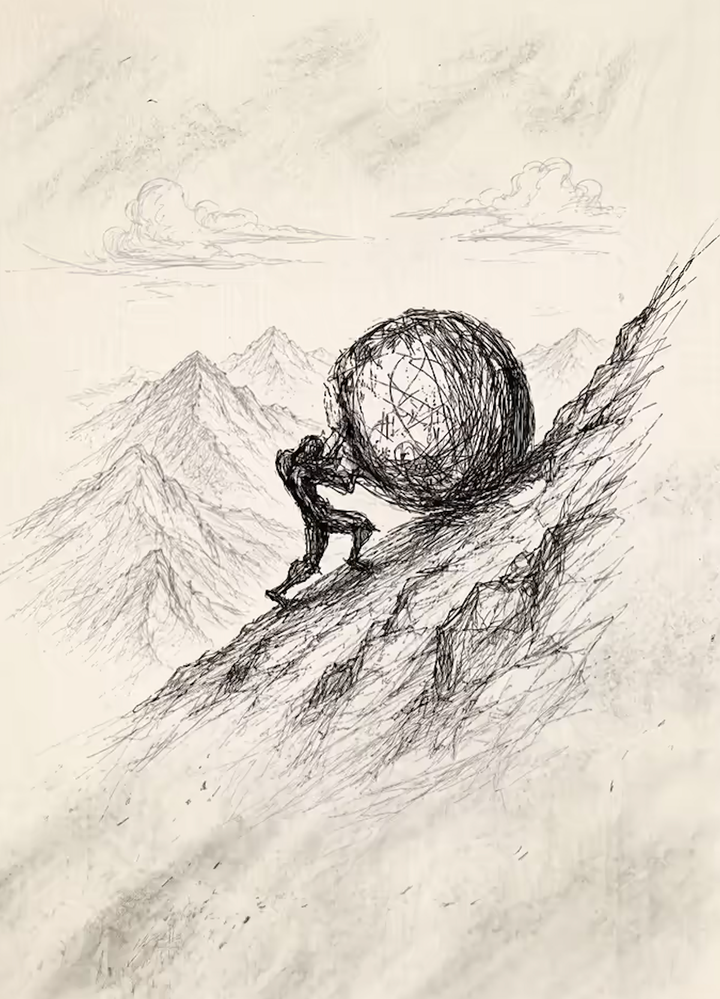
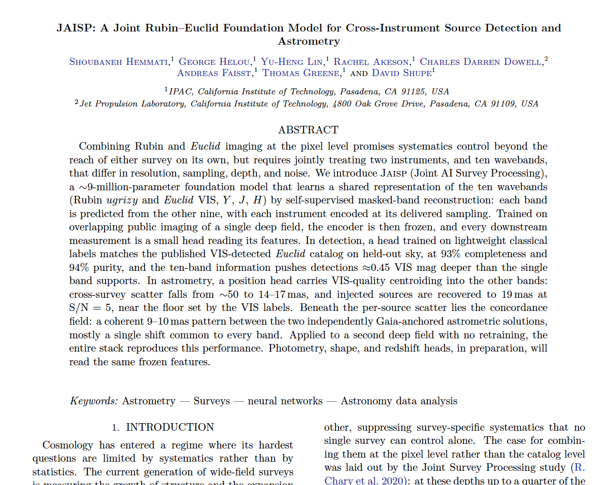
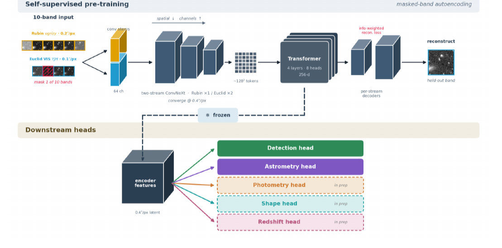

Sisyphus, Optimizing in a Dynamic Universe
Information theory, from brains to models of the sky
Shoubaneh Hemmati — Caltech/IPAC
We are always pushing toward an answer.
Sometimes the question is enormous: What is dark energy?
Sometimes it is ordinary: Do I need another drink?
Constant pushing means living inside questions that are not yet settled.
The scale changes. The structure of inquiry keeps returning.
Information is always information about a question.
One loop, three scales: first impressions · Rubin–Euclid astrometry · JAISP.
Payoff: measure how much astrometric information survives each representation layer.
Every inquiry begins with a question.
Who are they? Interesting? Trustworthy? Reliable? What should I expect from them?
Where is this source? θ = (x, y) — reached only through pixels, PSFs, noise, calibration.
The question decides which parts of reality are signal and which are nuisance.
Different stakes; similar machinery.
What matters → an objective
question → values → utility → loss / metric / distance
A football conversation is rich evidence for humor and flow — nearly useless for reliability under pressure.
What must be preserved: morphology, PSF, centroid shifts, subpixel information, WCS.
Change the ruler, change the landscape.
- The metric defines “closer to the answer.”
- Optimization moves through that geometry.
- A model can numerically converge while the scientific answer stays weakly constrained.
Convergence of the optimizer is not convergence of inquiry.
Prospect theory: the ruler people actually carry.
Value is felt relative to a reference point; losses weigh ≈2× equal gains; sensitivity fades with distance. And people weight probabilities as w(p), not p — rare events loom large.
The Gaussian log-likelihood is a symmetric ruler: an error of +δ costs exactly what −δ costs, and doubling the error quadruples the loss.
Both optimizers converge — on differently shaped landscapes.
Descriptive, not normative: the “wrong ruler” branch of the fork, measured in the lab.
We never see θ. We see what it generates.
words · tone · actions · promises · how they treat others · behavior under stress · repeated encounters
Rubin pixels · Euclid pixels · multiple bands · PSFs · noise maps · sampling · WCS
mood · setting · self-presentation · strategic behavior · stereotypes · memory · projection
photon noise · blending · chromatic morphology · PSF variation · resampling · detector effects · background
p(D | θ, context, observer, action)
The observer is not passive: probing changes behavior, and θ may be θ(t, context, relationship).
A model connects data to what we care about.
traits, intentions, expectations, context-dependence — prior beliefs, new observations, revised beliefs.
p(D | θ) with θ = (x, y) · or learned: D → z → θ̂
A structural analogy only — no claim that the brain literally runs Bayesian inference.
We cannot carry everything forward. So we compress.
D → T(D)
T(D): statistic · catalog entry · centroid · latent vector · posterior · first impression.
Different questions may require different compressions of the same data.
I(T(D); θ) = I(D; θ) yet I(T(D); φ) < I(D; φ)
Lossy with respect to the data can still be lossless with respect to the question.
A sufficient statistic for θ may silently destroy everything about φ.
Hundreds of observations collapse to “nice.”
- Enough for: “would I enjoy another coffee with them?”
- Hopeless for: “would I trust them with something important?”
- The clues may already be in memory — rebuild the summary.
No new data required — a new compression of the old data.
An answer — with a width.
A posterior, or a learned estimator, yields the quantity and its remaining uncertainty.
A number without its width is not an answer.
How uncertain am I?
Broad posterior — much still possible. Narrow posterior — little room left.
A confident first impression can be flatly wrong: bias, overconfidence, the wrong model class.
A tight error bar can be wrong: biased calibration, omitted systematics, miscalibrated learned uncertainty.
Low entropy is not truth. We can be confidently wrong.
How unexpected was this?
s(D) = −log p(D)
The quiet, restrained person does something wildly out of character.
An observation lands far from what source + calibration + model predict.
Surprise is not information gain — a bizarre datum can teach you nothing about θ.
How much did I learn?
DKL[ p(θ | D) ‖ p(θ) ]
Not “was the observation unexpected?” but “how much did it move what I believe about the thing I care about?”
Where is the hill steep?
If the true parameter moved slightly, how strongly would the observable distribution change?
- High Fisher: steep likelihood — the parameter can be pinned down.
- Low Fisher: flat direction — degeneracy, weak sensitivity.
In the mountain metaphor: Fisher is the local curvature of the hill.
F ≈ diag( 1/σx², 1/σy² ) ⇒ F ∝ 1/σpos²
More photons, sharper PSF, better sampling → a steeper hill. Astrometry is the cleanest first example.
On the human side, keep it qualitative: which interaction is diagnostic for the trait you care about?
- Entropy — how uncertain am I?
- Surprise — how unexpected was this observation?
- KL — how much did I learn?
- Fisher — where is the hill steep?
Is the answer good enough?
Yes — use it, stop, or ask the next question.
No — diagnose why. Three failures →
Not constraining enough — why?
wrong ruler
Question, metric, or loss is inadequate.
- ask a better question; redefine utility
- change the loss, the metric, the distance
You are not moving on the landscape — you are exchanging it. → back to the ruler
bad compression
The data had it; the representation hid it.
- a different statistic, readout, representation
- step back toward the raw data
No new observation required — foundation models live here. → recompress
missing information
The data do not contain it.
- depth · resolution · area · S/N
- wavelength · epoch · vantage · instrument
Which observation, exactly? → experimental design
Which observation teaches me the most?
EIG(d) = 𝔼y DKL[ p(θ | y, d) ‖ p(θ) ]
Maximize expected information gain; in the Gaussian limit, use a Fisher criterion.
Small talk ≈ little. Responsibility, disagreement, stress, cooperation ≫. Ethics bind the probe.
Sharper PSF, better sampling, another epoch. A little resolution can beat many photons.
Datasets can lend information to each other.
One experiment may constrain what another measures poorly.
The question becomes: where in the pipeline do you let them meet?
Work, friendship, stress, conflict, play — same latent person, different noise and selection.
D₁, D₂, D₃, … → one shared latent model of the person
Not: reduce each context to a label, then compare labels.
DR → CR, DE → CE, then CR + CE — each already lossy
(DR, DE) → Zjoint → measurement
Compress the shared reality, not each instrument separately.
Joint inference
Both carry information about θ: Fjoint = FR + FE (conditionally independent).
Information transfer
Euclid VIS sharpness improves measurements tied to Rubin bands.
Information completion
Masked-band reconstruction infers weakly observed structure from correlated channels.
The cost of rebuilding
If every question starts from raw pixels, the cost is enormous.
Can we learn a compression that survives changes in the question?
Not lossless; broadly reusable for questions not yet asked.
We do not keep separate mental databases for “person for football,” “person for advice,” “person for trust.”
One rich representation, interrogated differently per question. Failure means reweight, recompress, or gather more.
This is what we did here.

A joint Rubin–Euclid foundation model for cross-instrument source detection and astrometry: learn a shared representation from the images, then read out the measurement needed for the question.
Learn once, interrogate per question.

10 bands: Rubin ugrizy + Euclid VIS·Y·J·H → two-stream ConvNeXt stems → shared transformer latent → detection · astrometry · photometry · shape · redshift heads.
Fpixels → Fstems → Ffused → Fhead
Probe
Inject known (x,y); perturb ±δx, ±δy across noise realizations.
Measure
Fz = Jzᵀ Cz⁻¹ Jz, with Jz = ∂⟨z⟩/∂(x,y).
Read
F drop = information lost. Ffused ≈ Fpixels = lossless for astrometry.
Test astrometry first; repeat for photometry, shape, redshift.
Sometimes the hill itself moves.
- A person changes, reacts, learns, performs, adapts to the observer.
- Even the “static” sky moves: proper motion across Rubin’s decade.
- New instruments, new surveys, new questions — the landscape is redrawn under your feet.
The optimizer is not merely climbing a difficult hill. The hill is dynamic.
Die on the hill · die on the slope
On the hill — the answer sufficed for the question. Stop, or ask the next one.
On the slope — uncertainty remains, the theory is incomplete, the experiment outlives you. The search for a final theory, half in longing, half in mourning.
Finite observers inside open-ended inquiry.

…and starts the game.
cartoon: Jon Adams
Maybe the rock comes back because we keep finding better questions.
One must imagine Sisyphus happy.